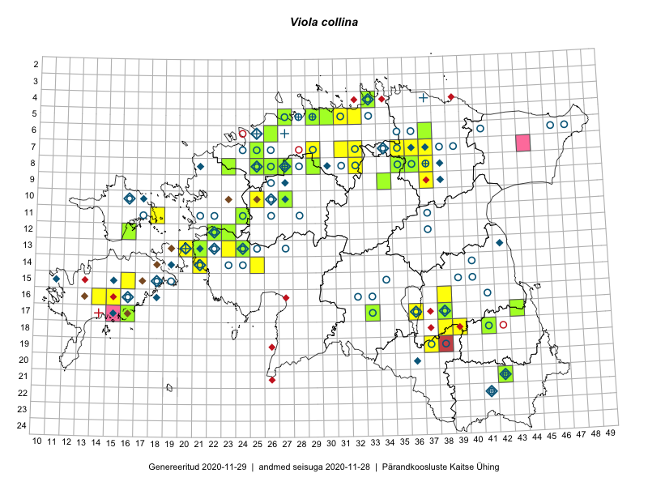

Viola collina
Uuendatud: 2016-12-07
Kaardile koondatud taksonid: Viola collina Besser

Kaart põhineb 35 kirjel, neist vaatlusi 34 ja eksemplare 1. Taksonit on leitud 27 ruudust.
| Ruut | Vaatleja(d) | Vaatlusaeg | Kirje tüüp | Viide andmebaasikirjele |
|---|---|---|---|---|
| 05-31 | Rein Kalamees | 2015-08-09 | ruut/ala | vaata PlutoFis |
| 05-32 | Rein Kalamees, Kersti Püssa | 2015-08-10 | ruut/ala | vaata PlutoFis |
| 13-21 | Rein Kalamees, Kersti Püssa | 2015-06-28 | ruut/ala | vaata PlutoFis |
| 13-24 | Rein Kalamees, Kersti Püssa | 2015-06-29 | ruut/ala | vaata PlutoFis |
| 16-39 | Karin Kikas, Elle Rajandu | 2015-04-21 | ruut/ala | vaata PlutoFis |
| 19-37 | Karin Kikas, Elle Rajandu | 2015-04-22 | ruut/ala | vaata PlutoFis |
| 08-35 | Toivo Sepp, Eerik Leibak | 2015-05-12 | ruut/ala | vaata PlutoFis |
| 08-35 | Toivo Sepp, Eerik Leibak | 2015-05-12 | punkt | vaata PlutoFis |
| 18-39 | Kai Rünk, Ülle Jõgar, Illi Tarmu | 2015-05-19 | punkt | vaata PlutoFis |
| 16-40 | Karin Kikas, Elle Rajandu | 2015-04-21 | ruut/ala | vaata PlutoFis |
| 12-16 | Meeli Mesipuu, Timo Luhamäe | 2015-05-28 | ruut/ala | vaata PlutoFis |
| 13-20 | Kadri Tali | 2015-04-15 | ruut/ala | vaata PlutoFis |
| 17-16 | Kadri Tali | 2015-05-04 | ruut/ala | vaata PlutoFis |
| 17-36 | Helle Mäemets, Mare Leis | 2015-06-25 | ruut/ala | vaata PlutoFis |
| 13-20 | Kadri Tali | 2015-05-08 | ruut/ala | vaata PlutoFis |
| 18-38 | Ülle Jõgar, Illi Tarmu, Kai Rünk | 2015-05-19 | punkt | vaata PlutoFis |
| 07-37 | Peedu Saar, Ott Luuk | 2014-10-08 | ruut/ala | vaata PlutoFis |
| 14-25 | Toomas Kukk, Oliver Parrest | 2016-07-08 | ruut/ala | vaata PlutoFis |
| 06-26 | Tiina Elvisto, Eerik Leibak | 2016-07-04 | ruut/ala | vaata PlutoFis |
| 13-23 | Thea Kull, Eerik Leibak | 2016-07-05 | punkt | vaata PlutoFis |
| 13-23 | Thea Kull, Eerik Leibak | 2016-07-05 | ruut/ala | vaata PlutoFis |
| 16-38 | Rein Kalamees, Kersti Püssa | 2016-07-19 | punkt | vaata PlutoFis |
| 08-36 | Thea Kull, Timo Luhamäe | 2016-07-27 | ruut/ala | vaata PlutoFis |
| 16-38 | Rein Kalamees, Kersti Püssa | 2016-07-19 | ruut/ala | vaata PlutoFis |
| 15-16 | Meeli Mesipuu, Maret Gerz | 2016-08-13 | ruut/ala | vaata PlutoFis |
| 17-16 | Toomas Kukk, Meeli Mesipuu | 2016-08-12 | ruut/ala | vaata PlutoFis |
| 14-25 | Toomas Kukk, Oliver Parrest | 2016-07-08 | punkt | vaata PlutoFis |
| 08-32 | Peedu Saar, Ott Luuk | 2016-09-28 | punkt | vaata PlutoFis |
| 11-24 | Helle Mäemets, Tiina Elvisto | 2016-07-06 | ruut/ala | vaata PlutoFis |
| 08-32 | Ott Luuk, Peedu Saar | 2016-09-28 | ruut/ala | vaata PlutoFis |
| 08-25 | Meeli Mesipuu, Thea Kull | 2016-05-12 | punkt | vaata PlutoFis |
| 07-31 | Peedu Saar, Toivo Sepp | 2016-07-18 | ruut/ala | vaata PlutoFis |
| 07-31 | Toivo Sepp, Peedu Saar | 2016-07-18 | punkt | vaata PlutoFis |
| 12-23 | Meeli Mesipuu, Maret Gerz | 2015-08-24 | ruut/ala | vaata PlutoFis |
| 05-30 | Peedu Saar, Ott Luuk | 2015-09-04 | eksemplar | vaata PlutoFis |